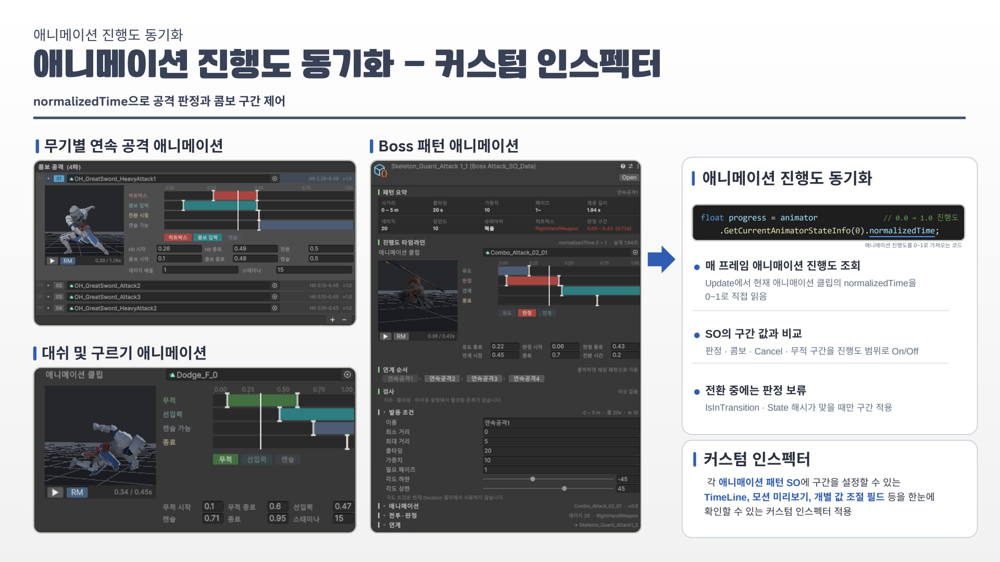
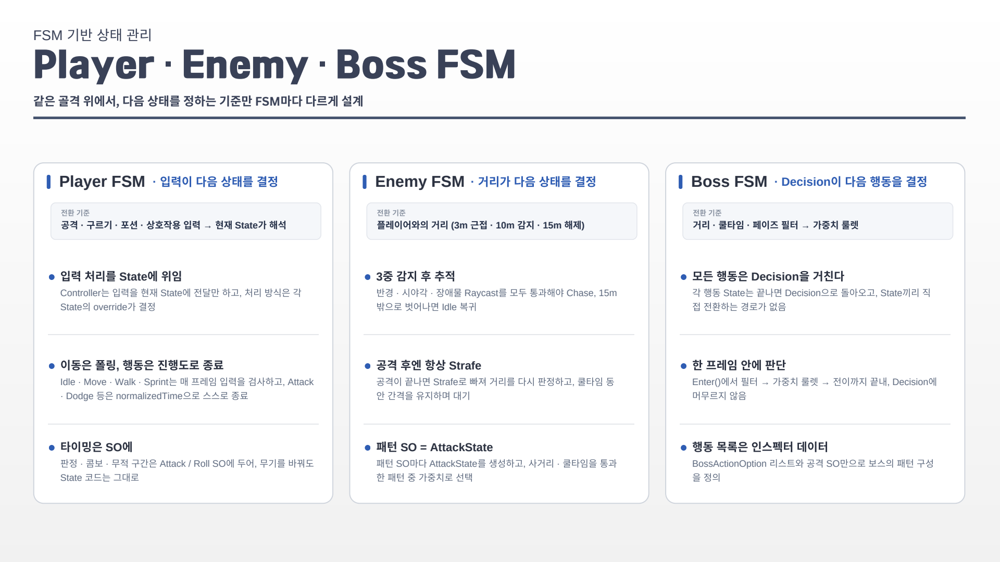
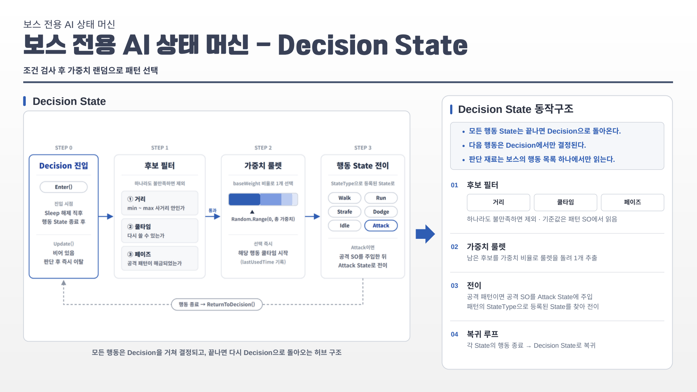
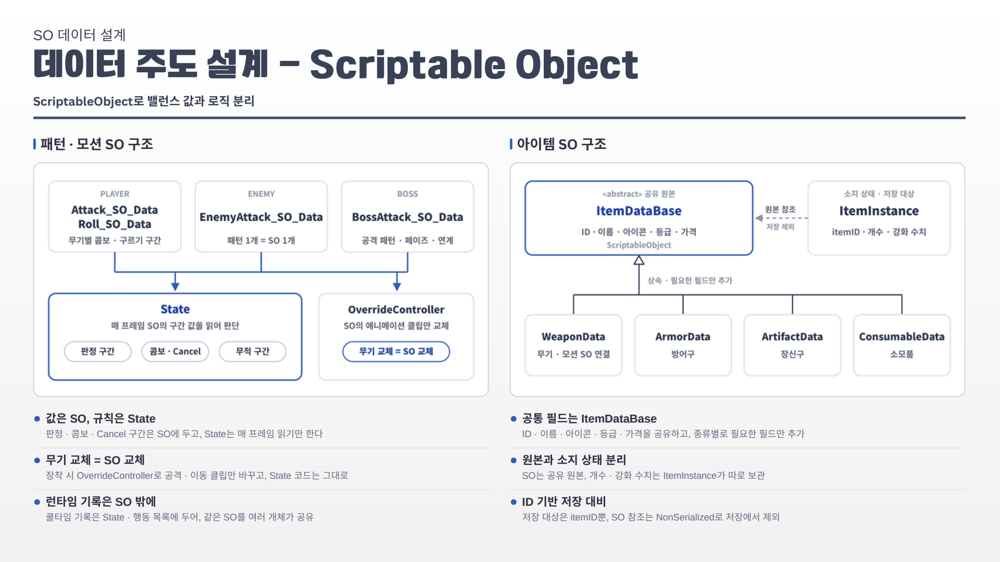

THE PROJECT
입력과 판정 사이의 작은 차이
화톳불을 거점으로 성장하며 Skeleton Guardian에 도전하는 액션 게임입니다. 무기별 콤보, 선입력, 공격 캔슬, 구르기 무적 구간과 락온으로 전투 타이밍을 구성했습니다.
Unity 6C#URPFSMScriptableObjectInput SystemCustom Inspector
기능을 완성하는 데서 한 걸음 더 나아가, 기능 추가와 수정을 고려한 상태·데이터 분리의 중요성을 배웠습니다. 이후 팀 프로젝트에서 웨이브와 패턴을 코드 수정 없이 조정하는 데이터 구조와 제작 도구로 확장했습니다.
ENGINEERING NOTES
문제에서 구현까지
01
애니메이션 진행도로 판정 타이밍을 통일
문제공격·콤보·캔슬·무적 판정이 애니메이션과 어긋나지 않도록 제어해야 했습니다.
구현normalizedTime을 읽고 SO에 정의한 구간과 비교합니다. 예상 상태 해시와 일치하고 전환 중이 아닐 때만 구간을 적용하며, 커스텀 인스펙터의 0~1 타임라인과 모션 미리보기로 조절합니다.
결과공격 모션마다 판정과 선입력 구간을 데이터로 조정하고, 상태 로직은 무기 종류와 분리했습니다.
관련 코드 보기 +
저장소 접근 권한이 필요할 수 있습니다.

실제 프로젝트 문서의 구현 설명02
같은 골격, 다른 전환 기준의 FSM
문제공격·회피·피격을 한 번에 실행하지 않으면서 플레이어와 AI에 서로 다른 전환 기준을 적용해야 했습니다.
구현Controller가 State를 만들고 StateMachine이 현재 State 하나를 실행하며 Exit → Enter 순서를 보장합니다. Player는 입력, Enemy는 거리·시야·장애물 검사, Boss는 Decision을 기준으로 전환합니다.
결과같은 공격 입력도 Idle은 시작, Attack은 콤보 예약, Hit·Dead는 무시하도록 상태별 반응을 분리했습니다. 행동을 별도 클래스로 추가할 수 있는 구조를 만들었습니다.
관련 코드 보기 +
저장소 접근 권한이 필요할 수 있습니다.

실제 프로젝트 문서의 구현 설명03
조건 필터와 가중치로 선택하는 보스 AI
문제거리·쿨타임·페이즈에 맞는 패턴을 선택하고 행동 사이의 전환 규칙을 한 곳에서 관리해야 했습니다.
구현Decision에서 거리·쿨타임·필요 페이즈를 검사하고 남은 후보를 baseWeight 가중치 룰렛으로 선택합니다. 공격 SO를 해당 State에 주입하고 각 행동 종료 후 Decision으로 돌아갑니다.
결과보스 행동 목록과 패턴 SO로 패턴 구성을 조절합니다. 체력 50% 이하에서 2페이즈로 전환해 새로운 패턴을 해금합니다.
관련 코드 보기 +
저장소 접근 권한이 필요할 수 있습니다.

실제 프로젝트 문서의 구현 설명04
원본 데이터와 런타임 상태를 분리
문제무기를 교체하거나 같은 아이템 원본을 공유할 때 밸런스 데이터와 소지 상태가 섞이지 않아야 했습니다.
구현공격·회피·보스 패턴 값은 ScriptableObject에 보관하고 State는 이를 읽습니다. 장착 시 AnimatorOverrideController로 클립을 교체합니다. ItemDataBase 원본과 개수·강화를 담는 ItemInstance를 분리했습니다.
결과무기 교체는 데이터·클립 교체로 처리하고 State 코드를 유지합니다. 런타임 기록을 공유 SO 밖에 두고 itemID 기반 저장을 준비했습니다.
관련 코드 보기 +
저장소 접근 권한이 필요할 수 있습니다.

실제 프로젝트 문서의 구현 설명 01무기에 맞춘 근접 공격
01무기에 맞춘 근접 공격 02공격 타이밍과 회피
02공격 타이밍과 회피 03보스 패턴 대응
03보스 패턴 대응 04전투의 거리와 템포
04전투의 거리와 템포TAKE A CLOSER LOOK
영상과 프로젝트 자료